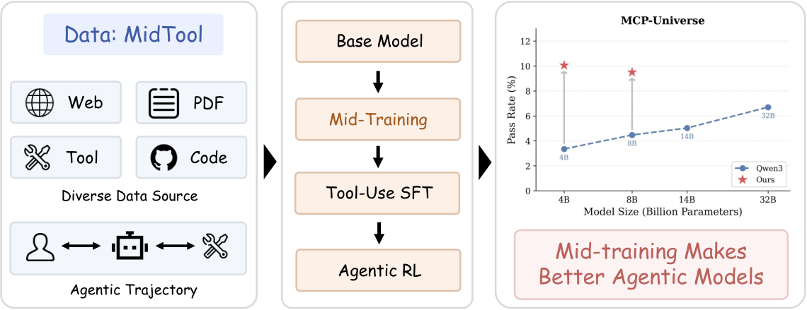
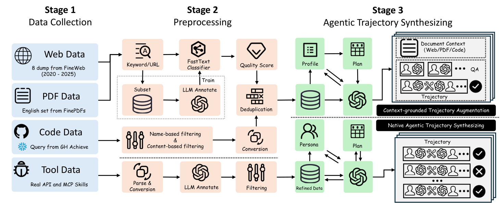

MidTool: Teaching Tool Use in Mid-Training, Before Post-Training Ever Sees a Trajectory
Paper: arXiv 2608.20314 (v1, Aug 20 2026), by Fengqing Jiang (UW, work done at Snowflake), Yite Wang, Boyi Liu, Zhaoyang Wang, Canwen Xu, Zhewei Yao, Radha Poovendran, Yuxiong He — University of Washington / Snowflake / UNC. Data & models on Hugging Face (MidTool release). Grounded in the full paper PDF text; figures from the arXiv HTML.
TL;DR
- MidTool is an open pipeline (and MidTool-Mix, its 20.3B-token / 11.22M-sample output) for mid-training general tool use — the stage between pretraining and post-training — built from four source families (web 42%, code 26%, PDF 23%, native agentic trajectories 9%) and two synthesis branches targeting the two deficits of tool use: grounding (inferring tool boundaries, arguments, and workflow structure from messy documentation) and execution (multi-turn planning, clarification, recovery against real APIs and MCP skills).
- The recipe works and compounds with RL: mid-training Qwen3-4B/8B-Base on MidTool-Mix before an identical SFT (100K TOUCAN subset) + agentic-RL recipe lifts BFCLv3 overall from 39.7→50.3 (4B, SFT) and to 54.2/55.1 with RL, with multi-turn subsets up >10 points; τ²-Bench overall Pass@1 4B goes 8.5→12.2→20.0, and MCP-Universe overall score 13.2→18.7→23.8 — both mid-trained models beat the official post-trained Qwen3 releases.
- The ablation is the thesis: a matched-budget generic mid-training mix (Dolmino-20BT) helps BFCL a bit and destroys MCP-Universe (13.2→5.4); each synthesis branch alone helps somewhere and hurts elsewhere; only the full mixture improves all three benchmarks at once. And one boundary stays fixed: MCP-Universe web-search stays at 0.00 throughout — deep-search-style agency does not fall out of general tool-use supervision.
Why this matters
Post-training has been carrying the entire weight of tool use — SFT and RL on curated traces — while the knowledge that underlies tool use (API references, manuals, SDK docs, schemas, orchestration code) mostly never appears as clean demonstrations. The mid-training wave already claimed math/science (MegaMath, Dolmino), deep research (AgentFounder), and SWE (daVinci-Dev); MidTool is the first open pipeline+corpus staking out general tool use, and it's the "data" answer to a question your rl/harness threads keep asking from the training-algorithm side: where should agentic capability actually be installed? Agent Lightning and ClawGym II assume the capability substrate exists and optimize it through harnesses; MidTool argues a chunk of that substrate belongs before post-training, where you can afford 20B tokens of heterogeneous, weakly-structured supervision instead of 100K precious trajectories.
The capability-boundary finding is the strategically interesting part. General tool-use mid-training transfers to unfamiliar MCP servers (browser automation, finance, location all improve) — so it's not memorizing tools, it's installing schema-grounding and composition priors. But web-search stays at zero at both scales, through both SFT and RL. Long-horizon evidence-gathering with iterative refinement is apparently a different capability that needs its own dedicated data (the AgentFounder bet), not an emergent bonus of tool fluency. That's a concrete map of where "general agentic capability" factorizes.

Figure 1 from the paper: a 20.3B-token mid-training corpus, a base→mid-train→SFT→RL pipeline, and MCP-Universe results where mid-trained models beat official post-trained Qwen3.The core idea
Treat tool use like math was treated a year ago: a capability with its own mid-training distribution. The pipeline has three stages. Stage 1 collects four complementary source families — FineWeb dumps 2020–2025 prescreened for developer content; the English slice of FinePDFs (manuals, handbooks — longer procedural content, noisier extraction); two GitHub slices seeded from GH Archive events (agent/MCP-related repos + high-quality multi-language repos, with an actively maintained benchmark blacklist against leakage); and structured tool artifacts (REST APIs, MCP skills) that expose executable schemas directly. Stage 2 is source-specific filtering: StarCoder-style heuristics and doc-directory matching for code; a four-phase web/PDF pipeline (keyword/URL prescreen → fastText classifier trained on LLM-labeled seeds → document-level quality filter → MinHash LSH dedup).
Stage 3 converts the refined corpus into supervision through two branches. Context-grounded trajectory augmentation (the grounding branch): Qwen3-235B-A22B-Instruct annotates each document with a quality score and an affordance profile (schema/API structure, CLI usage, workflow structure, tool topology); a rule-based planner converts affordances into a bounded budget of QA types — tool selection, schema-grounded parameter extraction, format-constrained calls, workflow recognition, parallel use — plus at most one multi-turn chain per document. Native agentic trajectory synthesis (the execution branch): group real endpoints/skills into a tool inventory, have GPT-5 score feasibility over trajectory families (single-call, multi/parallel, information-missing), synthesize personas and candidate plans, then let a deterministic quality-adaptive budget controller — conditioned on source quality, tool count, argument structure — allocate generation, biased toward multi-turn. Generated trajectories (GPT-5/5.1/5.2) are strictly validated for turn ordering, schema grounding, required arguments, and tool-response consistency, with retry-on-feedback before discard; AWM synthetic-environment rollouts and filtered Nemotron Agentic traces are mixed in.
The mid-training objective itself is standard next-token prediction over the mixture (reconstructed — the paper specifies the mixture, not the loss):
with trajectories normalized into a plain chat template without control tokens, and the mixture ratio (web : code : PDF : native ≈ 42 : 26 : 23 : 9) the operative design variable.
How it works
Stage 1 — Collect:
web ← FineWeb dumps 2020–25, keyword/URL prescreen # API refs, docs, tutorials, CLI
pdf ← FinePDFs (English) # manuals, handbooks
code ← GH Archive seeds → agent/MCP repos + quality repos # benchmark blacklist applied
tools ← real REST APIs + MCP skills # executable schemas
Stage 2 — Preprocess (per source):
fastText quality classifier (LLM-labeled seeds) → doc-level filter → MinHash LSH dedup
code: StarCoder-style content filters; keep docs/, examples/, tutorials/, cookbook/
Stage 3 — Synthesize (two branches):
A) grounding (web/pdf/code):
annotate doc → (quality, affordance profile) # Qwen3-235B annotator
rule-based planner → bounded QA budget + ≤1 multi-turn chain per doc
B) execution (tools):
inventory → GPT-5 feasibility profile per source
personas + candidate plans → deterministic budget controller (prefers multi-turn)
generate (GPT-5/5.1/5.2) → validate: turn order, schema grounding,
required args, tool-response consistency; retry w/ QC feedback, else discard
mix ← sources + branch-A QAs/chains + branch-B trajectories + AWM rollouts + Nemotron (filtered)
Train: Qwen3-{4B,8B}-Base → mid-train on 20.3B-token mix → SFT (100K TOUCAN) → agentic RL (526 AWM envs)
Results
All comparisons hold the downstream recipe fixed and vary only whether mid-training happens (references: official post-trained Qwen3-4B/8B, thinking disabled).
- BFCLv3: 4B overall 39.73 (SFT) / 39.51 (SFT+RL) → 50.25 / 54.18 with MidTool-Mix; multi-turn average 15.50 → 26.63 (+11.1) → 27.63. 8B overall 47.62/45.79 → 51.12 / 55.12, multi-turn 25.25 → 32.25 → 37.63. Official Qwen3-4B/8B sit at 24.27/26.45.
- τ²-Bench: 4B overall Pass@1 8.54 → 12.23 (SFT) → 19.96 (RL), Pass@4 20.50 → 28.06 → 38.49; 8B Pass@1 10.43 → 14.75 → 21.31. Gains concentrate in airline/retail; telecom stays hard for everyone (4B RL: 6.36).
- MCP-Universe: 4B overall score 13.20 → 18.66 → 23.80 (pass rate 1.68% → 5.03% → 10.06%); 8B 15.18 → 17.82 → 25.16. Biggest jumps in financial analysis (4B: 5.00 → 38.33 with RL) and location; web search: 0.00 for every variant at both scales.
- Ablation (4B, SFT fixed, only mid-training corpus varies): no mid-training 39.73 BFCL overall / 13.20 MCP-U score; Dolmino-20BT 43.10 / 5.41; processed sources without trajectories 42.30 / 12.20; +native-trajectories-only 47.59 / 6.80; +context-grounded-only 44.66 / 8.46; full MidTool-Mix 50.25 / 18.66 and the only row that also lifts τ² (12.23/28.06). Each branch alone overfits its own strength; the mixture is the product.
- Appendix-level evidence: mid-training also yields lower SFT loss curves and faster early-stage RL reward growth, i.e. it's a better substrate for post-training, not just a head start on the metric.

Figure 2 from the paper: the three-stage pipeline — collection, source-specific preprocessing, and the two synthesis branches that turn documents and schemas into agentic supervision.How it connects
- Midtraining deep-dive (tracked: 2086849991721546189) and OctoLong (2085297063319797871) — the general mid-training playbook and its long-context-code instance; MidTool is the tool-use instance, and its Table 1 (FineWeb → Dolmino → MegaMath → AgentFounder → daVinci-Dev → MidTool) is the cleanest one-slide map of the "every capability gets a mid-training corpus" trend.
- agent-lightning-v1 / clawgym-ii (tracked) / training-agents-in-harnesses — the RL-through-harness thread optimizes behavior in situ; MidTool argues the atomic capabilities being optimized (schema grounding, argument extraction, recovery) should be installed pre-SFT. These are complementary layers of the same stack, and MidTool's "RL compounds the gains" rows are evidence the layers multiply.
- Bitter Lesson of Tool Calling (tracked: 2086846794840019178) — programmatic vs JSON tool-call formats; MidTool's corpus is format-heterogeneous by construction (CLI docs, code, schemas), which may be part of why transfer to unseen MCP servers works.
- When Do Agents Need MCP? (tracked, this week) — the CLI-vs-MCP cost study and MidTool's web-search zero both point at the same decomposition: tool invocation is nearly solved, tool-strategy (search, long-horizon control flow) is the open frontier.
- liquid-harness-native-post-training — Liquid's multi-stage recipe put agentic RL inside production harnesses; MidTool is the missing earliest stage of that pipeline diagram.
Critical take
The honest caveats are about provenance and circularity. The "open corpus" is synthesized substantially by closed models — GPT-5/5.1/5.2 generate the native trajectories, so MidTool-Mix is partly a distillation channel from OpenAI's tool-use behavior into open Qwen bases (with the ToS and reproducibility questions that implies; the pipeline is open, but rerunning it requires frontier-API budget). Second, the RL environments (526 AWM synthetic envs) and the evaluation harness both come from the same AWM line of work the authors follow — τ²/MCP-U results are computed under "the eval harness developed by Wang et al. (2026)," which is also a MidTool data source; nothing looks improper, but the training-eval ecosystem is tighter-knit than the three-benchmark framing suggests. Third, leakage control is a blacklist plus an overlap audit (Appendix A.3) — necessary, but with 20.3B tokens crawled from developer-adjacent web/PDF/GitHub, BFCL-style function-call patterns are exactly the content hardest to de-duplicate semantically. Finally, some deltas are fragile: telecom Pass@1 drops under mid-training at 8B (5.26 → 2.19 with RL), hallucination scores dip at 4B SFT (60.46 → 56.95), and the ablation's single-branch rows show this mixture was tuned — treat the 42:26:23:9 ratio as a searched hyperparameter, not a law. None of this dents the main claim, which the Dolmino-20BT row makes cleanly: at matched budget, generic mid-training does not buy tool use, and targeted mid-training does.
If you remember three things
- Tool use is now a mid-training target: 20.3B tokens of web/PDF/code/tool data with synthesized grounding-and-execution supervision beat identical SFT+RL recipes by ~10–15 points on BFCL overall and roughly doubled τ²-Bench and MCP-Universe pass rates at 4B/8B.
- The mixture, not either branch, is the contribution — matched-budget Dolmino hurt MCP-Universe, and each synthesis branch alone regressed somewhere; only sources + grounding QAs + native trajectories lifted all three benchmarks.
- General tool fluency doesn't buy deep search: MCP-Universe web-search stayed at 0.00 through every variant — long-horizon exploratory agency needs its own dedicated data, which is the next mid-training corpus someone will build.